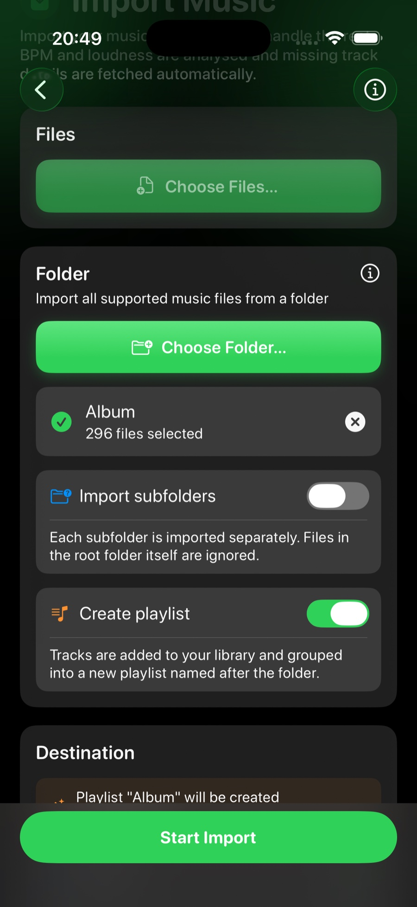

Deep dive
Bring your
library
in.
Run2Beat plays the audio files you already own — nothing is streamed and nothing is purchased through the app. This page is the long version of how music gets in: picking files, deduplicating what you already have, enriching incomplete tags, analysing tempo and loudness, and surviving a long background batch without leaving your library half-broken.
Where it all starts
Everything happens in the Import Music screen. You point Run2Beat at music on your device or in iCloud Drive, choose where the tracks should land, tap Start Import, and the app handles the rest — copying, optional HE-AAC encode, Shazam fill-in when enabled, BPM and loudness analysis, and duplicate checks before anything lands in the library database.

Two ways to import
There are two import modes, and they’re mutually exclusive — you pick files or a folder, not both at once. To switch between them, clear the current selection with the X button.
- Files. Choose one or more individual audio tracks. Perfect for adding a handful of new songs.
- Folder. Import every supported file inside a folder in a single operation — ideal for a whole album or a large collection on an external drive.
Importing a folder
Folder import has two extra options that make bulk libraries painless:
- Import subfolders. Point Run2Beat at a root folder — for example an external drive — and it scans every immediate subfolder, treating each as its own import group. Files sitting loose in the root folder itself are ignored.
- Create playlist. Tracks always go into your Library; turn this on to also group them into a playlist named after the folder. With subfolders enabled, you can create one playlist per folder automatically.
From your device or iCloud Drive
Files can live locally on your iPhone, on an external drive, or in iCloud Drive. Anything stored in iCloud is downloaded automatically before the import begins, with a per-file progress readout so you can see how much is left to fetch.
Supported formats
Run2Beat imports MP3, M4A (AAC) and WAV files. That covers the vast majority of personal music libraries.
The per-file pipeline
For each source file the importer roughly does:
- Copy into a temp file under the Music directory.
- Read embedded metadata via Apple’s media APIs, including whether the title was a real tag or only a file-name fallback.
- Optionally call Shazam when metadata is incomplete (see below).
- Transcode or copy into the final on-disk asset, embedding the resolved metadata.
- Run Layer A (byte hash) then Layer B (UX-metadata) duplicate checks.
- Insert or upgrade a library row in the database; queue BPM and loudness work without letting the batch burn the CPU watchdog.
The Import screen locks down while a batch runs; cancel keeps everything already committed and leaves a recoverable session in the import log.
No duplicates — what “same song” means
Run2Beat keeps one Library row per recording you would recognise as the same track. A duplicate is not defined by identical file bytes alone: two imports of the same song can produce different on-disk bytes (HE-AAC re-encode, metadata padding) while still looking identical in the list. The rules follow what you see, and they run in three places: manual import, AirDrop playlist receive, and Settings → Library Duplicates.
Two tracks match when all of the following hold:
- Title and artist — trimmed, case- and diacritic-insensitive, collapsed whitespace, with common Unicode variants folded (ellipsis, curly quotes, and so on). Empty titles never participate.
- Tempo — when both rows have BPM, the whole-number BPM shown in the Library must match. When BPM is still missing (typical mid-import), duration must agree within ±2 seconds instead.
- Cover art — compared with a perceptual difference hash (dHash): thumbnail → 9×8 greyscale grid → 64-bit hash of horizontal brightness gradients. Covers match when Hamming distance is ≤ 10 bits. Both missing artwork also requires the duration rule; one present and one missing is not a duplicate (so studio vs live cuts with different art stay apart).
Displayed bitrate is not part of identity. It only picks the keeper when duplicates coexist: higher Library kbps, then higher raw on-disk bitrate, then earlier date added. On import, a better incoming copy replaces the existing file in place (same UUID, playlists and BPM lists preserved). Equal or worse quality is skipped and the existing row is linked to any new playlist instead.
Two detection layers
- Layer A — byte hash. Fast SHA-256 lookups on each track’s stored audio hash catch exact re-imports of the same source file. AirDrop also compares the package manifest hash, then staged file bytes, before falling through to metadata matching.
- Layer B — UX metadata. The duplicate detector builds identity fields from title, artist, artwork, duration and bitrate. A per-batch library index buckets the library by normalised title + artist only (no cover decode at build time), then runs the artwork-aware decision only inside that small bucket.
That index matters. An earlier design decoded every cover and computed a dHash for the whole library on every imported file. On a multi-thousand-track library that N×M decode storm pushed memory and CPU into jetsam / watchdog kills with the screen locked — and under pressure intermittent decode failures returned no hash so real duplicates slipped through in waves. Tempo is deliberately not in the bucket key (incoming BPM is usually still missing); the same-song check reconciles tempo inside the bucket.
The Settings sweep uses the same identity rules with a different shape: cheap coarse buckets on the main thread, snapshot cover bytes only for true multi-row candidates, decode and cluster in the background, then rewrite playlist memberships, play order and BPM-list selections before deleting surplus rows. Decoding every cover on the main thread for a full-library pass is what the older design got wrong — that path is deliberately avoided.
What happens to every track
Importing isn’t just copying. As each file comes in, Run2Beat does three things automatically — all on your device (Shazam needs the network when enabled):
- BPM analysis. Every track’s tempo is measured on-device. Tracks the detector was unsure about are clearly flagged. Analysis is serialised across the batch so file N+1 does not transcode while file N’s BPM still burns a second core.
- Loudness levelling. Each track’s loudness (in LUFS) is measured with a bounded analyser pass so quiet and loud songs play back at a consistent level without blowing the memory budget.
- Shazam metadata. Optional enrichment for incomplete tags — detailed below.
Shazam auto-identification
Untagged files (track01.mp3 with no ID3) used to land looking like a folder listing. With Identify music automatically on (Settings → Import; off by default), incomplete metadata triggers a Shazam match during the same per-file import step — before the converted file is finalised — so recovered title, artist and artwork can be written into the output.
A call runs when any of title (file-name fallback only), artist, album or artwork is missing. Genres, ISRC and catalog URLs are not triggers; they are bonus fields harvested on a successful match. Matching is fill-in-blanks: existing tags are never overwritten. Catalog fields that ID3 cannot provide (genres, ISRC, Apple Music URL, Shazam web URL, release date) are stored when Shazam returns them.
The signature pipeline samples about 12 seconds of audio starting at roughly 25 % into the track (not from the very first frame), so quiet intros and spoken openings are less likely to spoil the match. Work runs off the main thread; transient Shazam / service failures retry once with a short backoff, while a true catalog miss is not retried. An in-process rate limiter floors matches at ~120 ms apart and backs off adaptively when the recent failure rate climbs, so a long batch does not trip Apple’s soft service cap.
Optional Only import identified songs (requires auto-identify on): incomplete files that Shazam cannot match are deleted from the temp area and never enter the Library. Complete files still import without contacting Shazam. Album is never returned by Shazam’s catalog match — identification remains best-effort, not authoritative.
Where tracks land
Tracks are always saved to your Library. You can additionally send them to a playlist — pick an existing one, or tap New playlist… to create one on the fly. When you choose to create playlists from folders, the destination is set for you automatically.
Save space with HE-AAC (optional)
If you want to fit more music on your iPhone, you can have imported files re-encoded to HE-AAC — a modern, efficient format. A typical 4-minute song lands around 2 MB instead of roughly 4 MB for a 128 kbps MP3, about half the storage for quality most people can’t tell apart at running volumes. It’s off by default and lives in Settings under Import. (Apple Watch sync always uses HE-AAC to keep the watch’s storage small, regardless of this setting.)
Background-safe batches
Large imports with the screen locked used to fail in several ways: iOS killing the app from sustained background CPU, jetsam from climbing memory, transient Shazam service storms, or an external drive dying mid-batch with no clean recovery. The pipeline defends each layer:
- Import log. A session row is created in the library database before the first file and saved after every successful insert (source name, counts, bytes, track UUIDs). If iOS kills the app at file 142 of 150, Settings → Import → Import logs can remove that partial batch in one tap.
- CPU throttle. BPM work is serialised across files, and an adaptive sleep (longer in background, longer when the SoC is hot) keeps duty cycle under the undocumented watchdog. Wall-clock cost is roughly 1.8–2.2× a parallel-everything import — the trade-off for being able to lock the phone and walk away.
- Memory hygiene. Artwork buffers are released after merge; media readers stay per-file scoped; loudness analysis stays channel- and duration-bounded; duplicate checks use the title/artist index instead of decoding every cover every time.
- Background activity keeper. Same silent-audio keeper used by bulk loudness / BPM re-analyse and Watch sync, so the process stays scheduled for wall-clock time (it does not exempt you from the CPU watchdog).
Plan for roughly 8 seconds per track with the screen locked — about 13 minutes for 100 tracks, 25–30 minutes for 200. With the screen on in the foreground it’s nearly twice as fast. A large import uses about as much battery as playing music for the same time (on the order of 5 % for 200 tracks) — for very large jobs, plug in first.
You can cancel at any time; anything already imported is kept. Empty sessions (cancelled before the first file) are pruned from the log so the list stays useful.
The short version
Pick files or a folder, choose a destination, start the import. Run2Beat copies and optionally encodes, fills incomplete tags via Shazam when you ask, measures BPM and loudness, skips or upgrades duplicates using what you would recognise as the same song, and leaves an audit trail so a killed background batch is recoverable. The Library stays one row per recording — not one row per accidental re-import.
→ Back to the overview